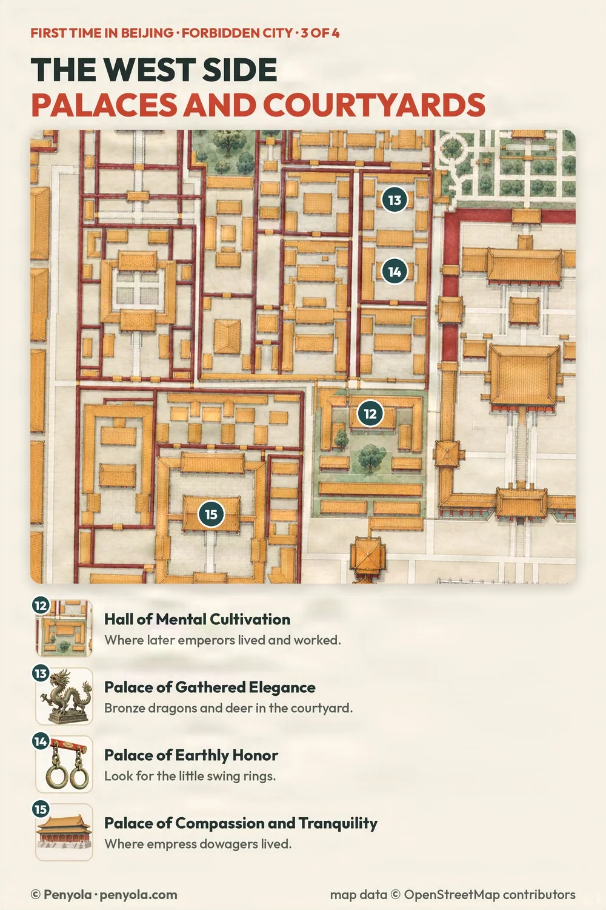

Forbidden City · map
Forbidden City map: the west side
Last checked:
The palace by area: Outer court · Inner court · West side · East side · whole map
West of the inner court is a maze of smaller palaces and courtyards where later emperors worked and the imperial women lived. None of these spots is on the Classic route: turn left (west) off the central axis after the Palace of Heavenly Purity. It is quieter than the middle, and the courtyards are small enough to take in properly.

Map data © OpenStreetMap contributors
12. Hall of Mental Cultivation
From the Yongzheng Emperor on, this is where emperors lived and did their daily work, instead of the Palace of Heavenly Purity on the central axis.
13. Palace of Gathered Elegance
In the courtyard stand bronze dragons, with raised heads and curling bodies, and spotted bronze deer, a familiar lucky subject in Chinese art. Paired figures like these bring a sense of ceremony into a much smaller space than the great courts.
14. Palace of Earthly Honor
Look up for small metal fittings that once held a swing. They are easy to miss, and a rare glimpse of everyday palace life rather than ceremony.
15. Palace of Compassion and Tranquility (Cining Palace)
The palace of the empress dowagers. It was founded in 1536 and repaired many times under the Qing; Empress Dowager Xiaozhuang moved here in 1653. Later it housed senior imperial women and hosted ceremonies in honour of the dowagers. It lies further southwest, apart from the other three.
Tickets and opening
Everyone enters at the Meridian Gate and leaves by the Gate of Divine Might or the East Glorious Gate. The palace is closed on Mondays, except public holidays. Book your entry ticket online with your passport; see how to book.
The palace by area: Outer court · Inner court · West side · East side · whole map
More planning guides
- Forbidden City map: two routes and 21 spots
- The Forbidden City in half a day
- Forbidden City entrance and exits
Sources
Checked on these official pages on 11 November 2026: